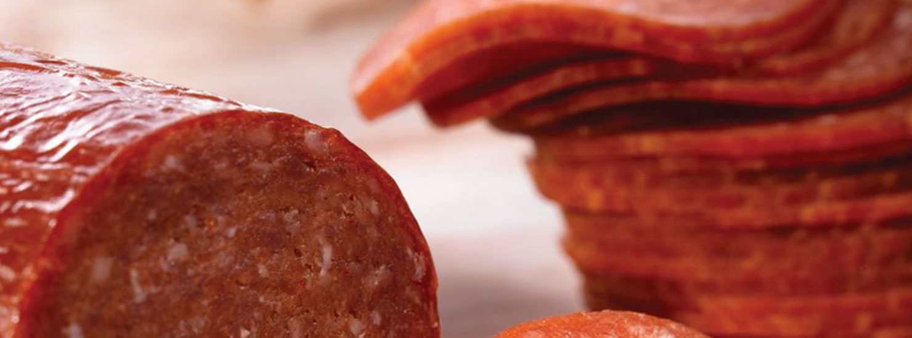
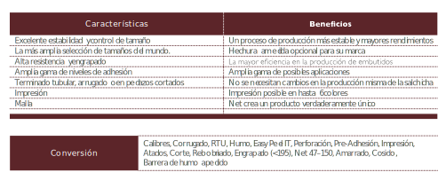

Tripa
Fibrosa
Fibrosa ST
La funda ViskoTeepak ST, con su estabilidad de tamaño y permeabilidad superior, es la opción perfecta para muchas aplicaciones. Las Fundas fibrosas ST se usan en productos asociados con la calidad confiable de marcas conocidas, como salchichas y jamones ahumados o cocinados.
Gracias a su consistencia de calibre y resistencia mecánica, la ViskoTeepak ST rinde bien en todas las etapas del proceso. Sus excelentes características para manipulación aseguran fácil embutido manual o mecánico, al mismo tiempo que satisface los más estrictos requerimientos de seguridad e higiene.
La fibrosa es también un producto biodegradable a base de materias primas naturales y renovables. Es ligera pero fuerte, con excelente elasticidad para mejor rendimiento. Gracias a su alta permeabilidad, se puede lograr una calidad superior en los ciclos de ahumado y madurado, acelerando el proceso de su negocio.
Las fibrosas vienen en piezas planas o pre-amarradas, paquetes o carretes. Puede ser entregado en sticks corrugados para embutido de alta velocidad, tanto en seco como pre-humedecido. Hay muchos colores disponibles para dar a sus productos un aspecto agradable y aumentar las ventas. Además, la capacidad de impresión de la fibrosa ViskoTeepak permite diferenciar bien la marca en los estantes de los minoristas.
Las propiedades únicas de las fibrosas ViskoTeeak provienen de una combinación a base de papel especial y revestimiento de celulosa natural. La base de papel da resistencia y estabilidad dimensional, lo que es la mejor opción para las fábricas de embutidos de alta velocidad. La impregnación de celulosa da permeabilidad al agua y el humo y permite el estiramiento y contracción de la funda según los requisitos de procesamientos específicos de los grandes o pequeños productores.
La fibrosa ST es la mejor opción para aplicaciones de rebanado en fábrica, donde el control/estabilidad de tamaño de la salchicha es importante o se necesita mucha resistencia.
